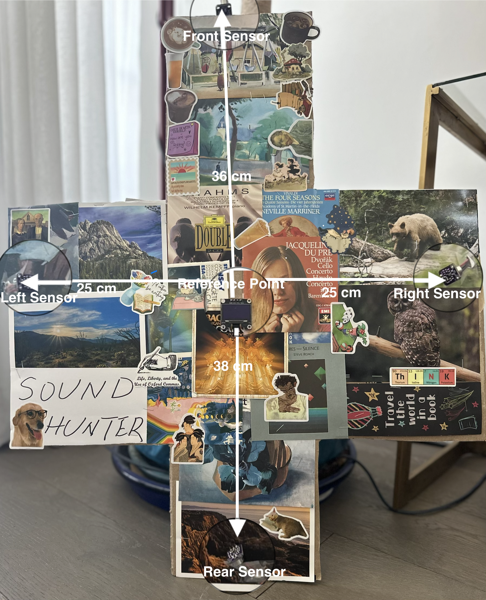
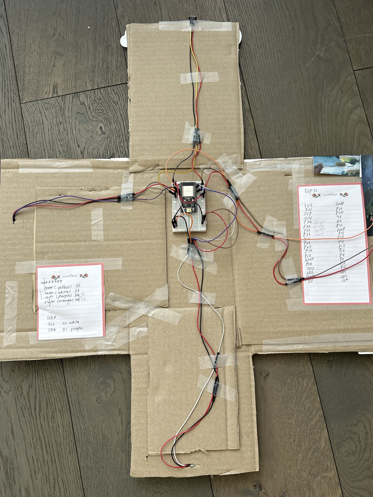
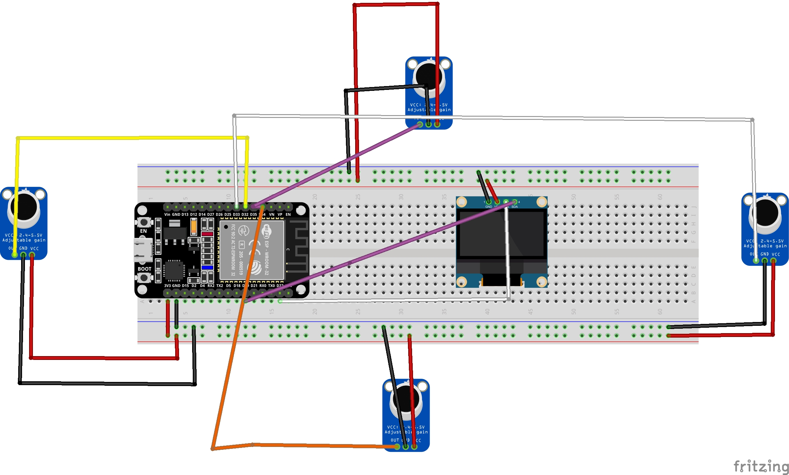
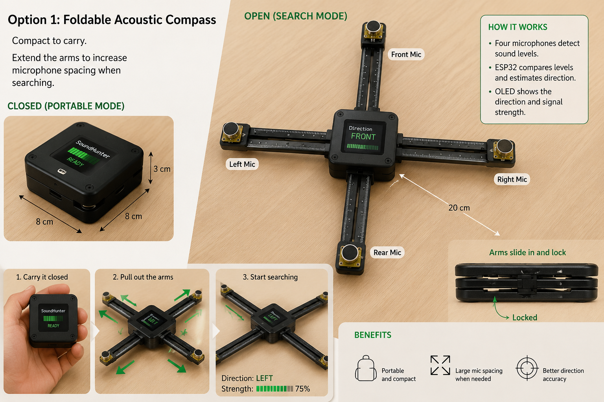
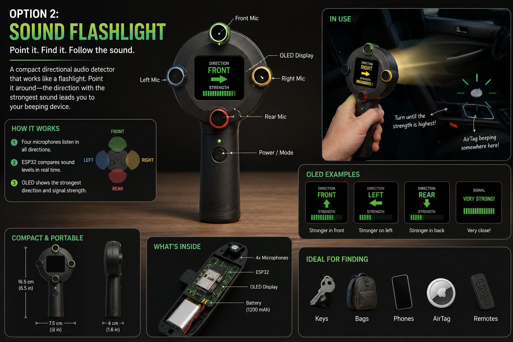
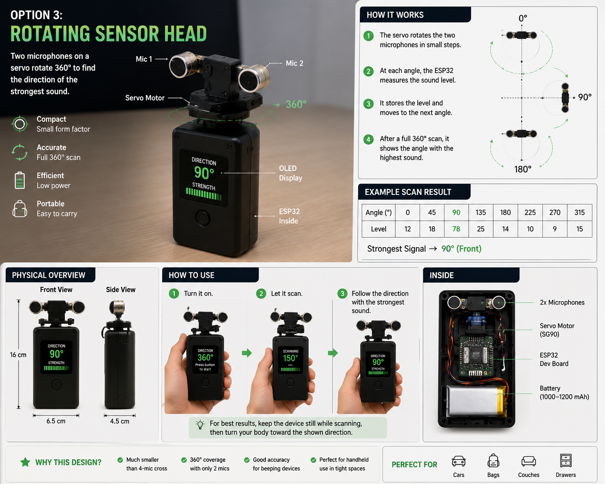
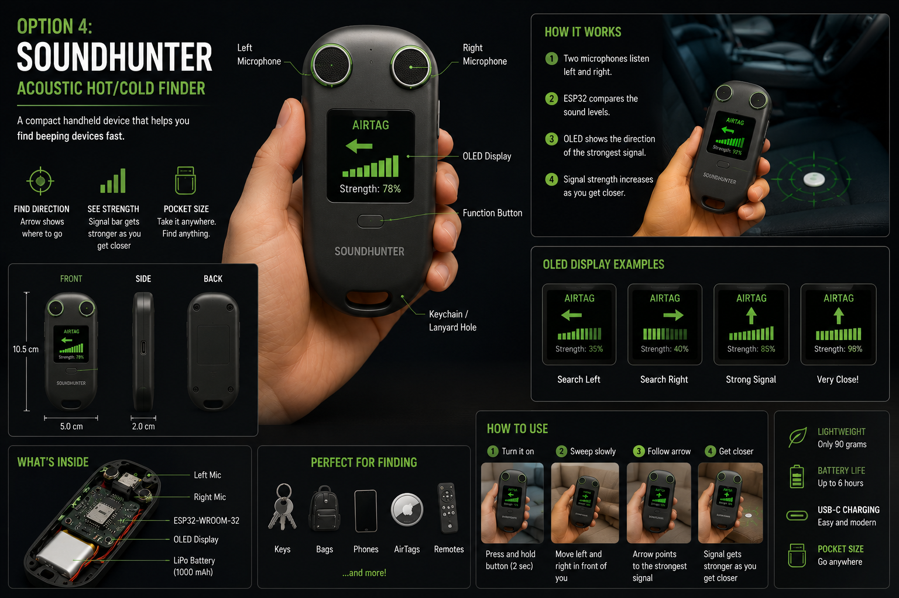
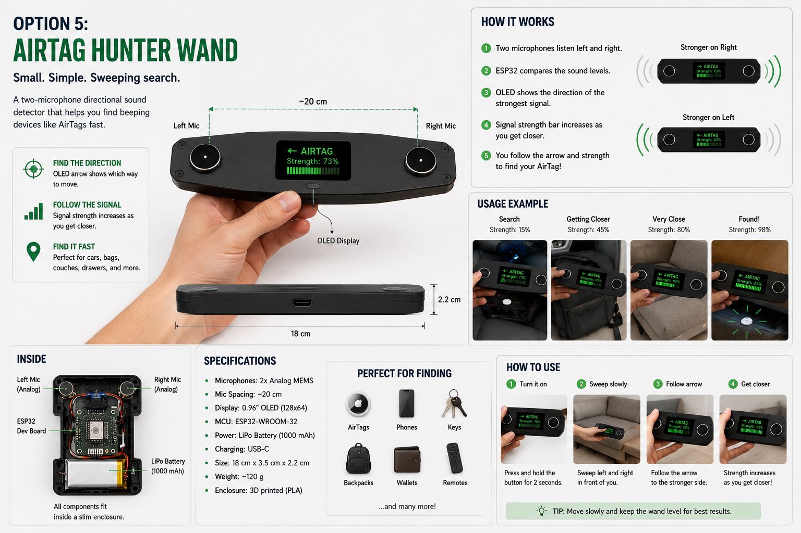

Prototype Front
Front-facing view of the collage-covered prototype with measured sensor spacing and the OLED reference point visible in the center.
ESP32 Acoustic Compass
A directional sound-finding prototype that uses four microphones, an ESP32, and a compact OLED display to help locate nearby beeping devices like AirTags, phones, alarms, and other misplaced electronics.
Motivation
SoundHunter explores whether a low-cost microphone array can act like a simple acoustic compass. Even when tools like AirTag or Find My tell you an item is nearby, it can still be frustrating to figure out whether the sound is under a seat, inside a bag, or tucked into a hidden compartment. This project turns that last step into a directional search experience.
How It Works
The ESP32 samples each microphone, compares front vs. rear and left vs. right sound levels, and estimates the dominant direction in real time.
horizontal = right microphone level - left microphone level vertical = front microphone level - rear microphone level
The firmware smooths microphone readings, applies a deadband to reduce jitter, and updates the OLED with the strongest apparent direction.
Current Build
The current SoundHunter prototype is a breadboard-based build centered around an ESP32, four analog microphones, and a small OLED display. The front photo includes labeled dimensions showing the approximate distance from the center reference point to each sensor. The device is usually placed horizontally during use; it is shown vertically in the front image only to make the layout easier to read.
The cardboard enclosure also became a small personal art project. As part of my collage hobby, I decorated it with postcards, travel images, and classical music album covers that I had collected on my cupboard. I really enjoyed that process because it made the prototype feel less like a temporary electronics build and more like an object with its own character.

Front-facing view of the collage-covered prototype with measured sensor spacing and the OLED reference point visible in the center.

Rear-side view showing the cardboard structure, taped wiring paths, and the physical layout behind the prototype shell.

The analog microphone module used for each directional sensor channel in the current prototype.
Physical Layout
Front Mic
^
Left Mic <- ESP32/OLED -> Right Mic
v
Rear Mic
For better results, the microphones should be spaced out as much as the enclosure allows. Larger spacing generally improves directional stability compared with placing the sensors too close together.
Build Reference

A breadboard view showing the current ESP32, OLED, and four-microphone wiring layout used for the SoundHunter prototype.
Speculative Futures
These concept images were generated with ChatGPT as visual explorations of how SoundHunter could evolve from a prototype into a more polished consumer-facing device.

A compact concept with extendable arms to increase microphone spacing during search mode.

A handheld detector that borrows the interaction model of a flashlight: point, sweep, and follow the strongest sound.

A servo-assisted scanning concept that rotates a two-microphone head to locate the strongest sound angle.

A pocket-sized device that guides the user with directional arrows and signal-strength feedback.

A slim directional wand optimized for left-right sweeping to help track down nearby beeping devices like AirTags, remotes, and phones.
Project Status
Future Improvements